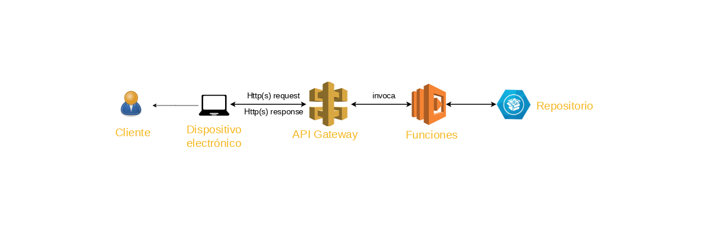
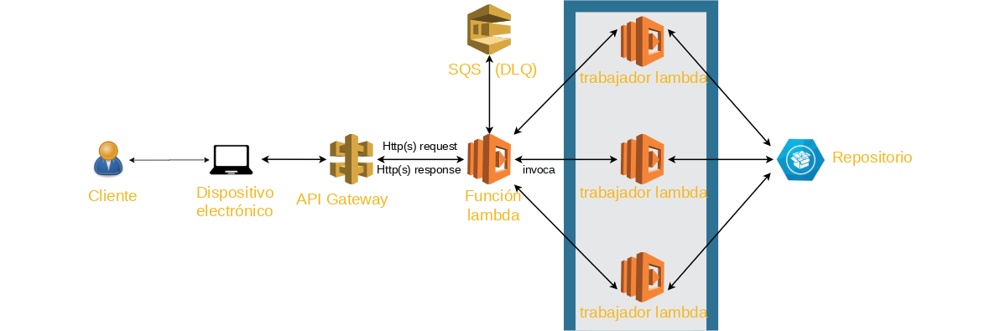
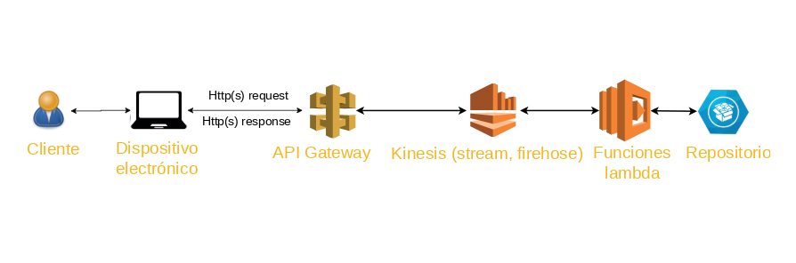
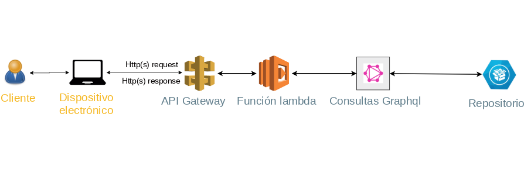

Patrón Servicio Web Simple
El patrón de Servicio Web Simple es el más sencillo y básico que se puede encontrar, el cliente puede acceder al servicio web a través de la API Gateway, que conduce a las funciones lambda requeridas, a su vez enlazadas a eventos desencadenantes como acciones en la base de datos no relacional DynamoDB.
Patrón Fan Out
El patrón Fan Out tiene como lema la frase “divide y vencerás”, ya que se debe dividir una tarea en subtareas, ejecutar varias funciones en paralelo y presentar el resultado que se obtiene.
Patrón Tuberías y Filtros
El patrón de Tuberías y Filtros captura una gran cantidad de datos y realiza una distribución rápida a almacenes de datos o a variados servicios, tan rápido como estos se generen y cumpliendo con la gran cantidad de eventos. Posteriormente los servicios receptan estos datos, procesan la información, aplican la lógica de negocios necesaria a través de funciones lambda (análisis, transformación, reajuste) y despachen la información resultante a almacenes o bases de datos como DynamoDB.

Tipos de consultas con patrón Gráfico
Consulta 1: Extracción del registro con número de atributos predeterminados por medio del id del registro ingresado en la interfaz de usuario. Entrada: id. Salida: id y discipline únicamente del registro consultado.Consulta 2: Extracción de registros que sean mayores al salario ingresado en la interfaz de usuario. Entrada: salary. Salida: id, salary y sex únicamente de los registros que cumplan la condición.
Consulta 3: Consulta de todos los registros que se tenga en la base de datos. Salida: id, discipline, rank, salary, serie y sex.
Estas consultas se las realiza por medio del patrón Gráfico.
Patrón Gráfico
El patrón Grafico se utiliza para usar un solo punto final o única función para procesar múltiples peticiones con diferentes datos, este patrón también es usado para que esta única función tenga control y pueda invocar a otras funciones específicas dependiendo de los datos de entrada, de este modo es opcional configurar el API Gateway y se puede llamar a las funciones de forma manual.
Implementación de patrones arquitectónicos sin utilizar buenas prácticas en Serverless para AWS
Patrón Servicio Web Simple
El patrón de Servicio Web Simple es el más sencillo y básico que se puede encontrar, el cliente puede acceder al servicio web a través de la API Gateway, que conduce a las funciones lambda requeridas, a su vez enlazadas a eventos desencadenantes como acciones en la base de datos no relacional DynamoDB.
Patrón Tuberías y Filtros
El patrón de Tuberías y Filtros captura una gran cantidad de datos y realiza una distribución rápida a almacenes de datos o a variados servicios, tan rápido como estos se generen y cumpliendo con la gran cantidad de eventos. Posteriormente los servicios receptan estos datos, procesan la información, aplican la lógica de negocios necesaria a través de funciones lambda (análisis, transformación, reajuste) y despachen la información resultante a almacenes o bases de datos como DynamoDB.